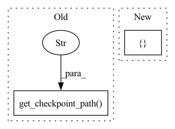

Pattern ID :29840

Before Change
_, test_mAP_2 = validate(test_loader, model_2_ema, target_dataset.query, target_dataset.gallery,
device, cmc_flag=True, rerank=args.rerank)
if test_mAP_1 > test_mAP_2 and test_mAP_1 > best_test_mAP:
shutil.copy(logger.get_checkpoint_path("model_1_latest"), logger.get_checkpoint_path("best"))
best_test_mAP = test_mAP_1
if test_mAP_2 > test_mAP_1 and test_mAP_2 > best_test_mAP:
shutil.copy(logger.get_checkpoint_path("model_2_latest"), logger.get_checkpoint_path("best"))
After Change
if (epoch + 1) % args.eval_step == 0 or (epoch == args.epochs - 1):
// save checkpoint and remember best mAP
torch.save(
{
"model_1": model_1.state_dict(),
"model_1_ema": model_1_ema.state_dict(),
"model_2": model_2.state_dict(),
"model_2_ema": model_2_ema.state_dict(),
"epoch": epoch
}, logger.get_checkpoint_path(epoch)
)
print("Test model_1 on target domain...")
_, test_mAP_1 = validate(test_loader, model_1_ema, target_dataset.query, target_dataset.gallery,
In pattern: SUPERPATTERN
Frequency: 3
Non-data size: 2
Instances
Fragment ID: 88337603
Project Name: thuml/transfer-learning-library
Commit Name: 91cc646b6e3c004ef8e2aba07ee26ef7b652116f
Time: 2021-09-03
Author: chenbx18@mails.tsinghua.edu.cn
File Name: examples/domain_adaptation/reid/mmt.py
M Class Name: AnonimousClass
N Class Name: AnonimousClass
M Method Name: main(1)
N Method Name: main(1)
M Parent Class:
N Parent Class:
M File Name: examples/domain_adaptation/reid/mmt.py
N File Name: examples/domain_adaptation/reid/mmt.py
M Start Line: 39
M End Line: 164
N Start Line: 120
N End Line: 173
'>
Before Change
_, test_mAP = validate(test_loader, model, target_dataset.query, target_dataset.gallery, device,
cmc_flag=True, rerank=args.rerank)
if test_mAP > best_test_mAP:
shutil.copy(logger.get_checkpoint_path("latest"), logger.get_checkpoint_path("best"))
best_test_mAP = max(test_mAP, best_test_mAP)
// evaluate on test set
After Change
if (epoch + 1) % args.eval_step == 0 or (epoch == args.epochs - 1):
// remember best mAP and save checkpoint
torch.save(
{
"model": model.state_dict(),
"epoch": epoch
}, logger.get_checkpoint_path(epoch)
)
print("Test on target domain...")
_, test_mAP = validate(test_loader, model, target_dataset.query, target_dataset.gallery, device,
'>
Fragment ID: 88337606
Project Name: thuml/transfer-learning-library
Commit Name: 91cc646b6e3c004ef8e2aba07ee26ef7b652116f
Time: 2021-09-03
Author: chenbx18@mails.tsinghua.edu.cn
File Name: examples/domain_adaptation/reid/baseline_cluster.py
M Class Name: AnonimousClass
N Class Name: AnonimousClass
M Method Name: main(1)
N Method Name: main(1)
M Parent Class:
N Parent Class:
M File Name: examples/domain_adaptation/reid/baseline_cluster.py
N File Name: examples/domain_adaptation/reid/baseline_cluster.py
M Start Line: 37
M End Line: 156
N Start Line: 89
N End Line: 162
'>
Before Change
print("best_acc1 = {:3.1f}".format(best_acc1))
// evaluate on test set
classifier.load_state_dict(torch.load(logger.get_checkpoint_path("best")))
acc1 = validate(test_loader, classifier, args)
print("test_acc1 = {:3.1f}".format(acc1))
After Change
else:
raise NotImplementedError(args.regularization_type)
head_regularization = L2Regularization(nn.ModuleList([classifier.head, classifier.bottleneck]))
// start training
best_acc1 = 0.0
'>
Fragment ID: 88337604
Project Name: thuml/transfer-learning-library
Commit Name: ce38964ed6fc09262ae95c971acef5a616e106f1
Time: 2021-03-18
Author: 13126830206@163.com
File Name: examples-ft/classification/delta.py
M Class Name: AnonimousClass
N Class Name: AnonimousClass
M Method Name: main(1)
N Method Name: main(1)
M Parent Class:
N Parent Class:
M File Name: examples-ft/classification/delta.py
N File Name: examples-ft/classification/delta.py
M Start Line: 34
M End Line: 147
N Start Line: 33
N End Line: 122